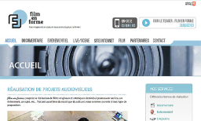
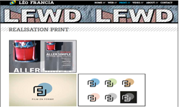

WELCOME TO HTML5 EDITOR
This editor is a free online tool which lets you design html pages and even a full website with an interface very close to illustrator, dreamweaver or powerpoint. But we've put a special touch in it ;)
It has a simple way to import medias, design pages, make navigation menus and more..
If you have no technical knowledge or if you are a designer, you can easily produce templates, animated layouts and more...
It has a simple way to import medias, design pages, make navigation menus and more..
If you have no technical knowledge or if you are a designer, you can easily produce templates, animated layouts and more...
It includes plugin system and CMS functionalities inspired by WordPress. So you can use or make plugins, and tools fitting your needs.
Thanks to Silex Labs non profit's exchange platform, each user can download or share their own creations: templates, plugins...
The HTML5 Editor was used to design this website.
Thanks to Silex Labs non profit's exchange platform, each user can download or share their own creations: templates, plugins...
The HTML5 Editor was used to design this website.
WHAT CAN I DO WITH IT ?

